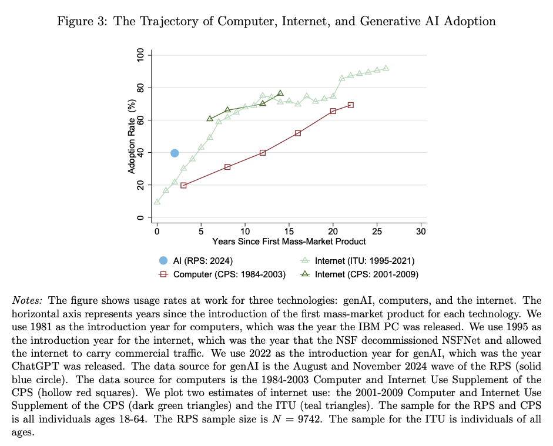
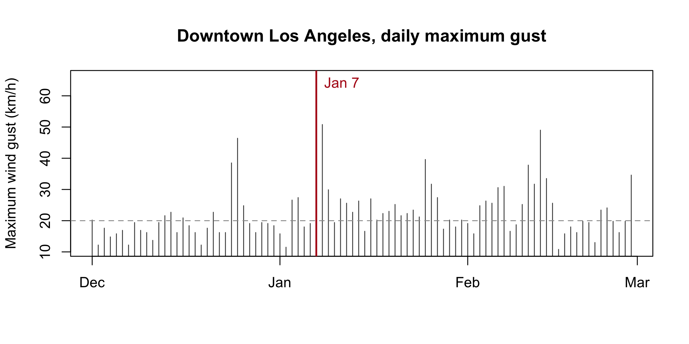

R.version.string1 · Overview
Tuesday, August 25, 2026
Slides · Live script · Source
This page is the “manual” for the session. The slides are the same material but in condensed form for the lecture. The live script is any R code we use in the session.
Objectives
By the end of this session you can:
- State what the course covers and navigate the course map.
- Run a script and find its outputs.
- Write down what a dataset should show, run the code, and check.
- Get your private course repository (repo) and commit a change in the browser.
About me
- Prof. Ariel Ortiz-Bobea: Dyson School and the Brooks School of Public Policy; at Cornell since 2014.
- Before Cornell: Resources for the Future; PhD, University of Maryland; Ministry of the Environment of the Dominican Republic.
- Research: how people cope with environmental change, especially how climate change affects the economy, and agriculture in particular. More at arielortizbobea.github.io.

Motivation
Every empirical paper rests on data somebody found, cleaned, checked, and reshaped. Methods courses start after that work is done. This course teaches that work.
Two trends make that work matter more than ever.
Economics turned empirical. Theory fell from over half of top-journal articles in the 1960s–80s to about a fifth in 2024. The largest category is now empirical work with data the authors assembled themselves: 38% of articles, up from 9% in 1963 (Hamermesh, 2025, updating Hamermesh, 2013).

AI arrived, fast. Two years after ChatGPT launched, close to 40% of working-age Americans used generative AI, about double the PC or the internet at the same age (Bick, Blandin, and Deming, 2024, published in Management Science, 2026).

AI is changing how research gets done. It writes competent first drafts of code, summarizes documents, and turns plain English into working scripts. That solves real problems: faster starts, less boilerplate, fewer hours lost to syntax. It also creates new ones: plausible code that runs and is wrong, results nobody checked, numbers nobody can trace. The scarce skill shifts from writing code to judging what comes back. This course engages exactly that.
AI models draft and execute code. You supervise and verify.
Error-free is not correct. A wrong number from code that runs clean is the key challenge of the AI era; this course builds the skills to catch it.
So every homework ends the same way: you check a number against something outside the computer: a published total, a printed figure, a calendar fact. That check is the assignment.
The course map
Twenty-eight meetings, two parts.
Part I — foundations (sessions 1–12, weeks 1–6). The whole pipeline on ordinary tables: R, diagnostic plots, wrangling, joins, functions and debugging, git, AI, verification, reproducible projects, graphics. You work by hand through session 7. AI enters at session 8, once you can judge its output.
Part II — applications (sessions 13–28, weeks 7–15). One family of unconventional data per session, each through the same pipeline: what the family answers, where to get it, how to process it, and which checks it demands.
The full schedule lists all twenty-eight sessions. The syllabus has the grading and the AI policy.
Six families of data types
- Messy tables: real spreadsheets and CSVs: merged headers, footnotes, sentinel codes. Clean them into data you can analyze.
- Text: laws, news, transcripts, listings. Turn words into variables with patterns and LLMs.
- Documents (PDFs & scans): reports and archives, born-digital or scanned. Extract tables that were never meant to be data.
- Images: photos and satellite tiles. Turn pixels into measurements: air quality from photos, growth from nightlights.
- Audio: speeches and interviews. Transcripts, plus the pauses and tone that carry meaning.
- Maps & rasters: points, boundaries, grids. Join places and build exposures: what is upwind, what is nearby.
The channels (how data reaches you) cut across all six: packaged downloads, APIs, scraping, licensed vendors, replication archives, and data you collect yourself.
What this course does not cover. No causal inference, no econometric theory, no estimation strategy; that is AEM 6851 in the spring. No machine-learning theory: we use models, we do not derive them. No video, no network data.
Why R?
Almost everything this course teaches transfers. Finding, cleaning, checking, and verifying data work the same way in Python, Stata, or Julia. The habits are the point; R is the vehicle.
We drive in R for practical reasons. It is free, open source, and built for data analysis, and one install gives you everything you need. Its user base spans statistics, economics, epidemiology, ecology, and data journalism, so most problems you will hit already have an answer written down. Its graphics are excellent. Stata is common in economics but paid and narrower. Python is a general-purpose language that also does data; it is the most common second language for this work.
Moving later is cheap. Once you can do this work in R, Python is close, and AI makes the move cheaper still: translating working R into Python is exactly the kind of delegation this course teaches you to verify.
Install party
Do these in order: RStudio looks for R when it starts, so install R first.
1. Install R. cran.r-project.org → your operating system.
- macOS: there are two builds. Apple silicon (M1–M4) needs the
arm64installer; older Intel Macs need thex86_64one. Apple menu → About This Mac tells you which you have. - Windows: click “base”, then the download link. You do not need Rtools.
2. Install RStudio. posit.co/download/rstudio-desktop → the free Desktop version. It also bundles Quarto, a tool that turns scripts into reports (we use it later in the course). There is nothing else to install.
Check it worked
3. Open RStudio (not R) and type this into the Console, bottom left:
You should see version 4-point-something. If you see an error, or RStudio says it cannot find an R installation, raise your hand.
4. One setting, right now. Tools → Global Options → General: uncheck “Restore .RData into workspace at startup”, and set “Save workspace to .RData on exit” to Never.
This setting prevents a common trap. By default RStudio saves your objects between sessions, so a script can seem to work because of a leftover you created an hour ago. With the setting off, your script is the only record of what you did.
The four panes. The Console (bottom left) runs code as you press Return. The Source pane (top left) holds scripts. Environment (top right) lists your objects. Plots and Files sit bottom right. Today: type in the Console, keep code worth keeping in Source.
If your laptop refuses. Make a free account at posit.cloud: RStudio in a browser. The first weeks all work there. Bring the machine to office hours and we fix the install.
Onboarding: get your repo
Here is what this block is for. Everyone in the course gets a personal repository: a private folder on GitHub that holds your work, keeps every version of it, and shows it to the teaching team. Every homework this semester is handed in there: you change files, you commit, we grade what you committed. Nothing is emailed, nothing is uploaded to Canvas.
Today you set that pipeline up and prove it works: create a GitHub account, receive your repository, and make one small commit. Ten minutes now means every homework this semester rides on plumbing you have already tested.
Everyone finishes this today, in the room. It runs entirely in a browser, so a half-installed laptop is no obstacle.
1. Get a GitHub account. github.com/signup.
Any email works; add your Cornell address later for the free GitHub Education benefits. Pick a username you would put on a CV. Already have an account? Use it; do not create a second one.
2. Submit the sign-up form. Open it either way: click the Sign-up form link in the Canvas welcome announcement, or scan the QR shown in class. It is a Google form with three boxes: your name, your NetID, your GitHub username. Fill them in and press Submit. (Your username is the name under the top-right menu on github.com, not your email address.)
This form is how we collect the class’s GitHub usernames. A script reads them, creates each student’s personal repository in the course organization, and sends the invitations in bulk. The invitation in the next step is generated from what you just typed.
3. Accept the invitation. We collect the usernames and send the invitations in batches during class. Yours arrives as an email from GitHub and as a banner at github.com/notifications. Click Accept invitation. You land in your new repository.
The repository is private. You own it, the teaching team can see it, and other students cannot.
Onboarding: your first commit
4. Edit the README in the browser. Click README.md, then the pencil icon. Fill in the three lines:
Name:
Program:
One dataset or question I would like to be able to handle by December:5. Commit. Green “Commit changes…” button, top right. Type a short message (add my intro), leave “Commit directly to the main branch” selected, and click Commit changes.
6. Look at what you did. Reload the repository’s front page. Your text is there, and above it your message, add my intro, with a timestamp.
You just used version control
What just happened. You made a commit: a permanent, timestamped snapshot of your work. No git install, no terminal: the browser did it.
You will hand in the first few homeworks the same way: edit or drag files onto the repository page, then commit. Session 7 will explain what git did here.
7. Check in. The last poll of the day asks for your repository’s URL. Copy it from the address bar and paste it in. This is how we take attendance today, and it shows us your setup worked end to end.
If something goes wrong.
| Symptom | Fix |
|---|---|
| No invitation while classmates get theirs | Check github.com/notifications and your email (spam too); then raise your hand; a typo’d username takes seconds to fix |
| You submitted the wrong username | Submit the form again with the right one, and raise your hand |
| You accepted while signed into the wrong account | Tell us; we re-invite the right one. Do not make a second account |
| No pencil icon on the README | You are looking at someone else’s repository, or you are signed out |
What should the data show?
The pattern for this whole course: something happens in the world, and we check whether the data agrees. Here is the something.
On January 7, 2025, two fires started in Los Angeles County: the Palisades fire near the coast, the Eaton fire above Altadena. A violent windstorm drove both, and a drought fed them. Together they destroyed about sixteen thousand structures. The homeworks build on these fires all semester. Today they give us a reason to pull one small file.
The National Weather Service saw it coming. At 3:24 PM on January 6, the day before ignition, its Los Angeles office issued a rare “Particularly Dangerous Situation” red flag warning: “THIS WILL LIKELY BE A LIFE THREATENING, DESTRUCTIVE, AND WIDESPREAD WINDSTORM”, with “destructive wind gusts between 80 and 100 mph” expected in the San Gabriel mountains and foothills (archived product).

We are about to plot the strongest daily wind gust in downtown Los Angeles, December 2024 through February 2025.
First write down what the data should show if the story is right. Turn each into a number or a date.
- Which date should show the biggest gust?
- A typical winter day gusts near 20 km/h. How tall should the spike be?
- What was December’s total rainfall, in millimetres?
You are not guessing; you are reading the story’s implications into numbers. When the plot appears, it will either confirm what you wrote or surprise you. Both are useful, and neither is possible with nothing written down.
Step 1: Pull the data
The data comes from Open-Meteo, which serves historical weather as a plain CSV over a URL. No account, no key, no package.
url <- paste0(
"https://archive-api.open-meteo.com/v1/archive",
"?latitude=34.05&longitude=-118.24",
"&start_date=2024-12-01&end_date=2025-02-28",
"&daily=wind_gusts_10m_max,wind_speed_10m_max,",
"temperature_2m_max,relative_humidity_2m_min,precipitation_sum",
"&timezone=America%2FLos_Angeles&format=csv"
)
la <- read.csv(url, skip = 3)
names(la) <- c("date", "gust", "wind", "tmax", "rh_min", "precip")
la$date <- as.Date(la$date)Three details.
read.csv() reads a URL like a filename. skip = 3 skips the first three lines, which describe the location, not the weather; the real header sits on line 4 (open the URL and look). The file ships names like wind_gusts_10m_max..km.h. (R’s rewrite of (km/h)), so we rename them. You will type these names all day.
TipIf the download fails
Campus wifi, a rate limit, an API outage: downloads fail. This session ships a saved copy of the exact response, so the demo still runs:
la <- read.csv(paste0(
"https://arielortizbobea.github.io/aem6850/fall-2026/sessions/",
"data/la-weather-dec2024-feb2025.csv"
), skip = 3)Session 14 turns this into a habit: commit the raw response so the pipeline re-runs identically later.
Step 2: Look at what arrived
Never compute on a file you have not looked at. Three lines, every time:
dim(la)#> [1] 90 6str(la)#> 'data.frame': 90 obs. of 6 variables:
#> $ date : Date, format: "2024-12-01" "2024-12-02" ...
#> $ gust : num 20.2 12.2 17.6 14.8 15.8 16.9 12.2 19.4 16.9 16.2 ...
#> $ wind : num 7.5 3.8 6.3 4 5 5 4.9 8 6.3 6.6 ...
#> $ tmax : num 24.5 22.6 21.5 19.7 21.2 25 26.3 21.2 19.7 20.2 ...
#> $ rh_min: int 12 19 36 52 28 14 10 27 27 6 ...
#> $ precip: num 0 0 0 0 0 0 0 0 0 0 ...summary(la$gust)#> Min. 1st Qu. Median Mean 3rd Qu. Max.
#> 10.80 16.90 20.00 22.71 25.60 65.90dim() reports ninety rows, six columns: what ninety days of daily data should give. If it said 89 or 91, we would stop and find out why. str() confirms date is a Date and the rest are numbers. summary() shows the range: a maximum gust of 4 or 4000 would flag a unit problem before any plot.
These are the quick checks, and every homework expects them.
Step 3: One plot
plot(la$date, la$gust,
type = "h", col = "grey30",
xlab = "", ylab = "Maximum wind gust (km/h)",
main = "Downtown Los Angeles, daily maximum gust")
abline(h = median(la$gust), lty = 2, col = "grey60")
abline(v = as.Date("2025-01-07"), col = "#b31b1b", lwd = 2)
text(as.Date("2025-01-07"), max(la$gust), " Jan 7",
col = "#b31b1b", adj = c(0, 1))
That is base R graphics, session 3’s topic: one-line plots for you, not for readers. type = "h" draws each day as a spike, the right shape for the question “how unusual was this one day?”
Step 4: Reconcile
Now compare the screen against what you wrote down.
la$date[which.max(la$gust)] # 1. the windiest day#> [1] "2025-01-07"max(la$gust) / median(la$gust) # 2. how unusual it was#> [1] 3.295sum(la$precip[format(la$date, "%Y-%m") == "2024-12"]) # 3. December rain, in mm#> [1] 0.5The windiest day of the winter is January 7, the day the fires started. The data and the world agree on something specific.
The gust ran 3.3 times a typical day. Most winter days in downtown LA top out near 20 km/h; January 7 hit 66.
December brought half a millimetre of rain. Two days in the month recorded anything at all. Wind alone does not burn a city; wind on three dry months of fuel does.
Where the number came from
66 km/h is about 41 mph. The National Weather Service was warning about that windstorm in far more dramatic terms than 41 mph, and it was right to. Both numbers are correct.
This file reports one model grid cell over downtown Los Angeles, ten metres above flat ground. The fires started in canyons twenty kilometres away, where Santa Ana winds funnel and accelerate.
A dataset is not the world. It measures the world somewhere specific, by a specific method, at a specific resolution. Always ask where your number came from.
Your turn: find the peak gust the National Weather Service recorded during that windstorm, and where that station sits. Write both down and bring them Thursday. That is a reconciliation: the smallest version of what every homework asks you to do.
Quick reference
Install checklist
| Step | Where | Done when |
|---|---|---|
| R | cran.r-project.org; match your chip on macOS | R.version.string prints 4.x |
| RStudio | posit.co/download/rstudio-desktop | It opens and finds R |
| Workspace setting | Tools → Global Options → General | Restore is off, Save is Never |
| GitHub | github.com/signup | You can sign in |
| Course repo | The sign-up form on Canvas | Your commit shows on the repo page |
| Fallback | posit.cloud | Only if the install failed |
Today’s R, in one screen
| Code | What it does |
|---|---|
R.version.string |
Which R you are running |
read.csv(url, skip = 3) |
Read a CSV from a file or a URL, ignoring the first 3 lines |
names(d) <- c(...) |
Rename all the columns |
as.Date(x) |
Turn text like "2025-01-07" into a date |
dim(d), str(d), summary(d$x) |
The three quick checks |
d$x |
One column, by name |
d$x[which.max(d$y)] |
The value of x in the row where y is largest |
plot(x, y, type = "h") |
Scatter, or spikes with type = "h" |
abline(h =, v =, lty =, col =) |
A horizontal or vertical reference line |
median(x), max(x), sum(x) |
Column summaries |
Keyboard
| Keys | What |
|---|---|
Cmd/Ctrl + Return |
Run the current line and move down |
Cmd/Ctrl + Shift + Return |
Run the whole script |
Ctrl + L |
Clear the console |
Tab |
Complete a name |
↑ |
The last thing you typed |
Links
- Session materials: slides · live script · snapshot of today’s data
- Syllabus · full schedule
- Open-Meteo historical archive: open-meteo.com
:::